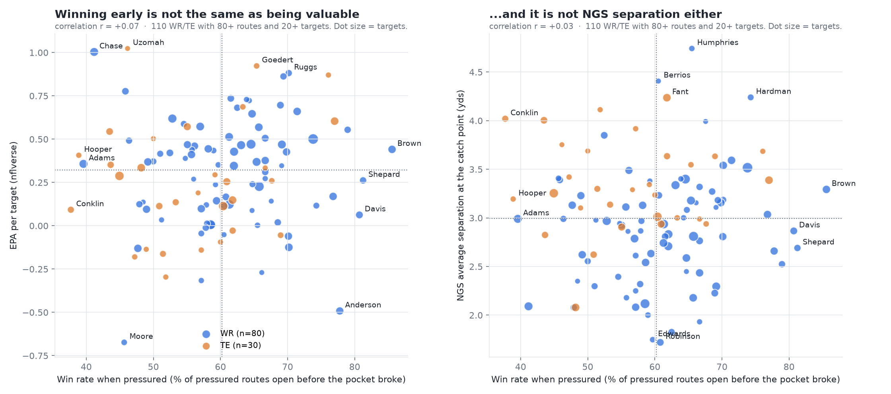

The Race
Pocket clock vs. route clock on every 2021 pass play (weeks 1–8). NFL Big Data Bowl, NYU Edition.
Two clocks start at the snap. The pocket clock stops when a pass rusher gets within 2 yards of the quarterback. Each route clock stops when that receiver has 3 yards of separation after a 5-yard stem. A receiver wins if he is open before the pocket breaks. The black tick is the throw.
0.0 s
0.0 s
What we found
| Pressured dropbacks | 2,660. The pocket breaks at a median 2.7 s; the first receiver is open at 1.6 s. |
| Throw to a receiver who won vs. lost his race | 57% vs. 48% completion, +6.4 points above expected (CPOE), same throw depth (11.0 vs. 10.8 air yards). n = 1,593. |
| Short vs. deep | The gap is on short passes (62% vs. 49%). On deep passes there is none (43% vs. 45%). |
| Sacks | 30% when nobody wins, 17% when a receiver wins by more than a second. |
| Who wins | Marquise Brown 86%, Devin Duvernay 83%. Davante Adams 40% and Ja'Marr Chase 41%, though both still produce high EPA per target. |
| Extra blocker vs. man coverage | Buys no pocket time (2.6 → 2.5 s) and cuts the race-won rate from 88% to 83%. |




Limits
The race measures timing, not value: it adds almost nothing to completion models beyond separation at the throw. Matchups are the nearest defender, the 2/3/5-yard thresholds are not tuned, and tracking stops at the throw. EPA, CPOE and win probability come from nflverse.